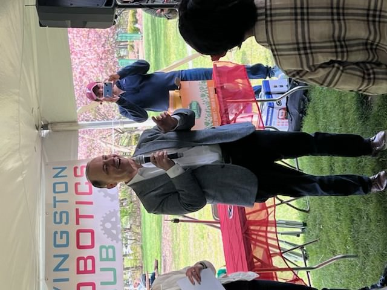

Skip to
main content
Skip to
main content
Serving as Mayor/Council Member of Livingston Township
Mr. Anthony has made significant contributions to his community through his roles as Mayor/Council Member. His dedication to listening to constituents and addressing their needs is evident in the impactful projects he's championed:
-
Saint Barnabas Medical Center Community Field on Madonna Drive:
He helped lead the development of the Saint Barnabas Medical Center Community Field, providing a valuable recreational space for the community. -
Preservation of 20 Acres of Open Space:
Mr. Anthony played a key role in preserving 20 acres of open space, ensuring that the township maintains its natural beauty. -
"Meet the Mayor" Sessions:
He instituted a 30-minute "Meet the Mayor" session before every council meeting, allowing constituents to share their concerns and ideas for a better community.
- "Doggie Dip" Event: Over 100 dogs now enjoy their own day at the pool, thanks to the "Doggie Dip" event, a cherished tradition started in 2019 when Mr. Anthony was mayor.

JSDD - Man of the Year
Alfred M. Anthony was awarded "Man of the Year" by Jewish Services for Developmentally Disabled (JSDD). In his acceptance, he stated:
-
Livingston’s Core Values:
Livingston is built on diversity and inclusion, valuing every human being, no matter our differences, and ensuring that no one is left out of the community. -
Commitment to Service:
This recognition underscores his dedication to serving others and advocating for important causes.
Being honored as "Man of the Year" in 2018 by JSDD
Mr. Anthony's commitment extends beyond his leadership role; his love for his children and sports is reflected in his dedication to coaching over 40 sports teams over the years, showing his deep involvement in his community and family life.
Seeking Legal Assistance

Complimentary & Private Consultation

No Charges or Fees Unless We Succeed